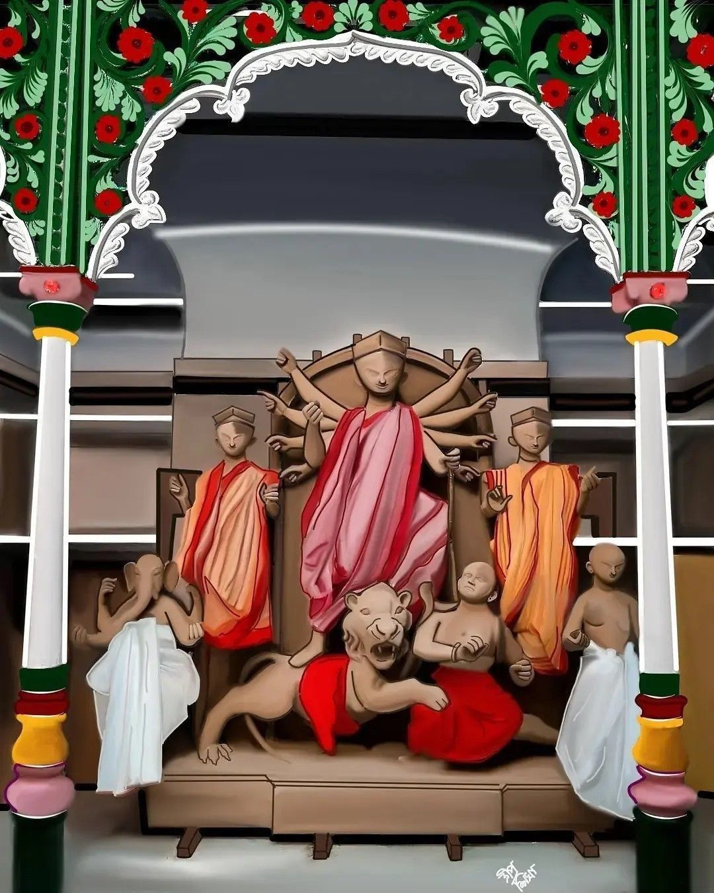
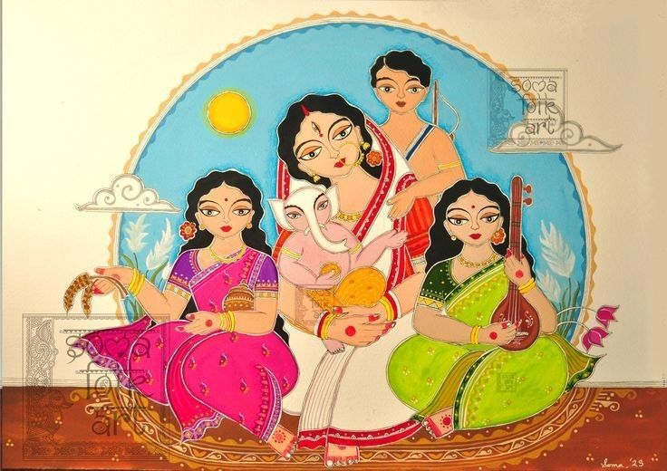
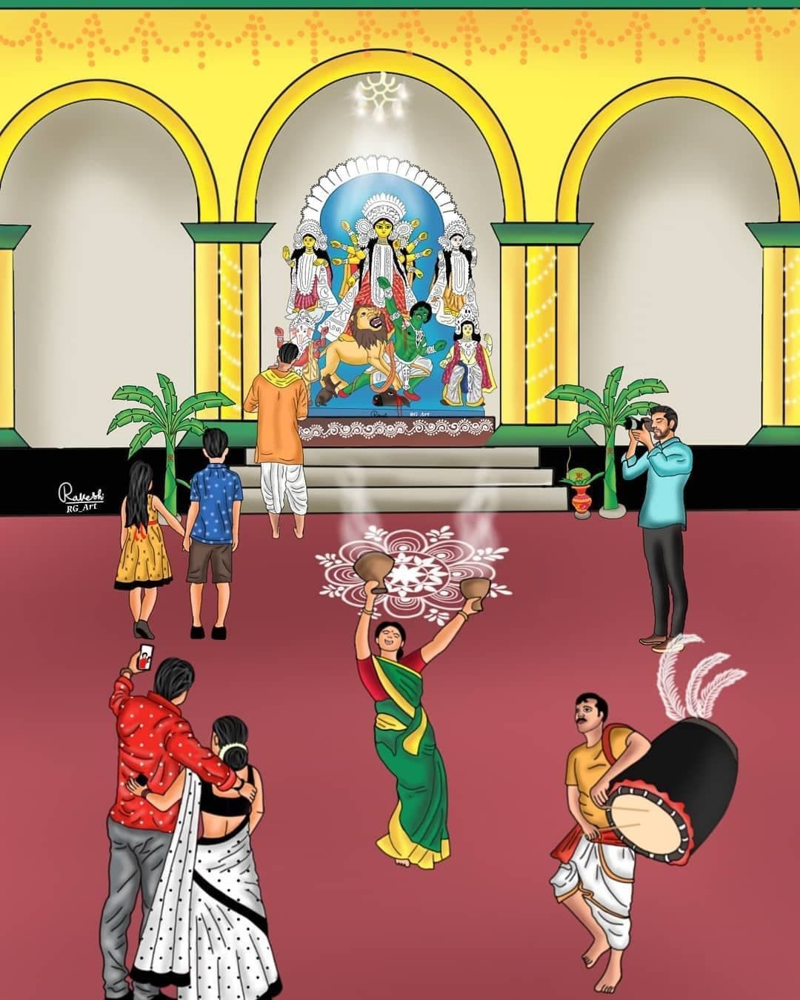
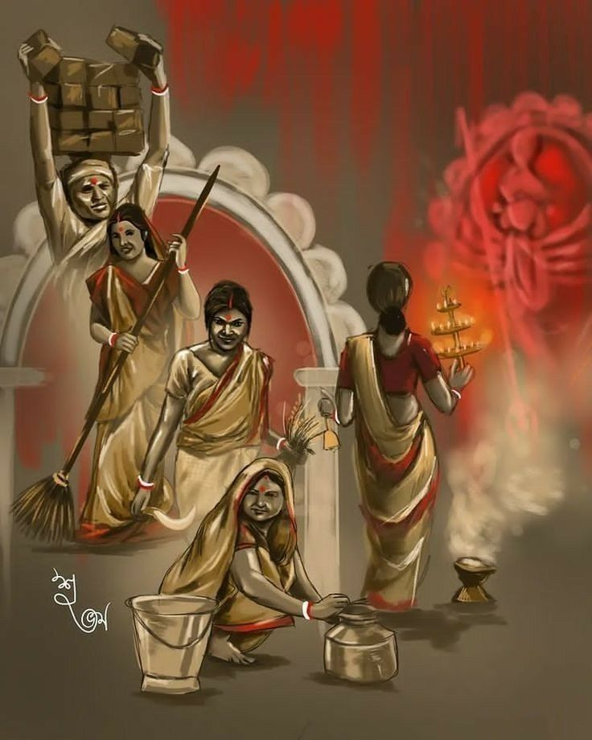
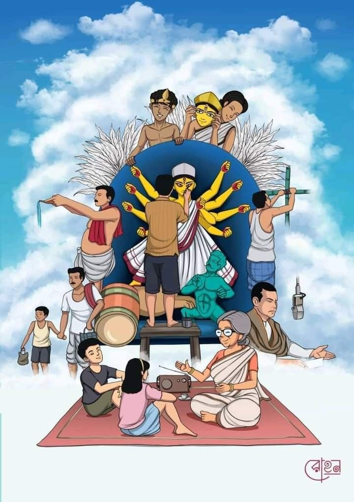

| |
|||||||||
|---|---|---|---|---|---|---|---|---|---|
| Durga Puja is a ten-day event, of which the last five days involve certain rituals and practices. The festival begins with Mahalaya, a day on which Hindus perform tarpaṇa by offering water and food to their dead ancestors. The day also marks the advent of Durga from her mythological marital home in Kailash.The next significant day of the festival is the sixth day (Sashthi), on which devotees welcomes the goddess and festive celebrations are inaugurated. On the seventh day (Saptami), eighth (Ashtami) and ninth (Navami) days, the goddess along with Lakshmi, Saraswati, Ganesha, and Kartikeya are revered and these days mark the main days of worship with recitation of scriptures, puja, legends of Durga in Devi Mahatmya, social visits to elaborately decorated and illuminated pandals (temporary structures meant for hosting the puja), among others. |  | ||||||||
| Durga is an ancient goddess of Hinduism according to available archeological and textual evidence. However, the origins of Durga Puja are unclear and undocumented. Surviving manuscripts from the 14th-century provide guidelines for Durga Puja, while historical records suggest the royalty and wealthy families to be sponsoring major Durga Puja public festivities, since at least the 16th-century.[13] The 11th or 12th-century Jain text Yasatilaka by Somadeva mentions an annual festival dedicated to a warrior goddess, celebrated by the king and his armed forces, and the description mirrors attributes of Durga Puja.Durga Puja, also known as Durgotsava or Sharodotsav, is an annual festival originating in the Indian subcontinent which reveres and pays homage to the Hindu goddess Durga, and is also celebrated because of Durga's victory over Mahishasura. | |||||||||
|  |  |  |  | ||||||
| |
|||||||||